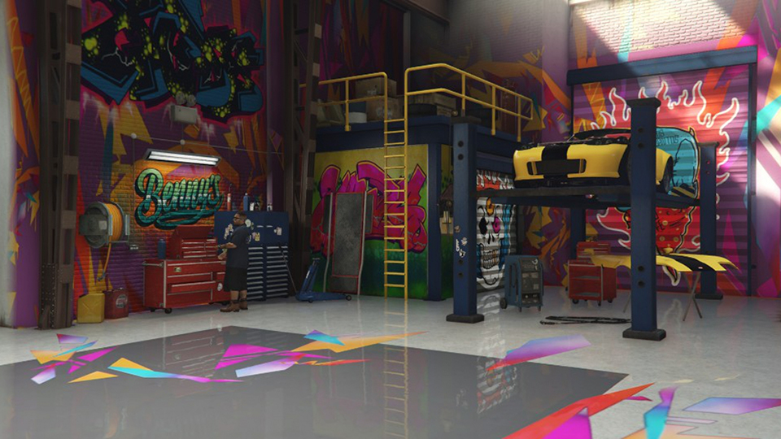

A TRADIÇÃO DO CROMO E DA PAIXÃO.
Mais do que uma oficina, somos a essência do Lowrider em Los Santos.
Onde Tudo Começou
A **Benny's Original Motor Works** não nasceu em um escritório corporativo. Nascemos nas ruas vibrantes de **Strawberry, South Los Santos**, com um único propósito: transformar carros de passeio em verdadeiras obras de arte que pulam.
Nosso fundador, o próprio Benny, começou com uma chave de boca enferrujada e uma visão: criar máquinas que não apenas rodam, mas que **dançam**. Enquanto outras oficinas se preocupavam com velocidade e aerodinâmica, nós nos dedicamos ao ritmo, ao estilo e à cultura.
Nossa Filosofia: A Arte da Suspensão
Para nós, um carro não está pronto até que ele possa fazer uma saudação. É por isso que somos os especialistas inquestionáveis em sistemas **Hidráulicos**. Instalamos bombas, cilindros e válvulas com precisão cirúrgica, transformando seu Voodoo, Chino ou Buccaneer em um ícone que desafia a gravidade.
Trabalhamos à moda antiga: cada **cromagem**, cada **pintura Candy Color**, cada sistema de **Áudio High-Fidelity** é instalado com a paixão de quem está criando uma herança, não apenas um veículo. Nossa garagem é o templo onde o metal encontra a alma.
Venha Fazer Parte da História
Ao escolher a Benny's, você não está apenas comprando um serviço; está entrando para uma família. Junte-se à cultura Lowrider que define Los Santos.
Nossos valores são simples:
- **Respeito** pelo Clássico.
- **Paixão** pelo Detalhe.
- **Domínio** da Hidráulica.